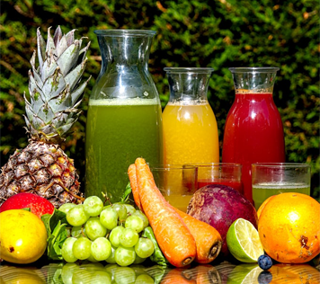

Smoothie, smoothy, atau smuthi adalah sebuah minuman yang terbuat dari buah dan/atau sayur mentah memakai sebuah blender. Smoothie biasanya berbahan dasar seperti sari buah, produk susu, seperti susu, yogurt, es krim atau keju cottage.

Sari buah atau jus adalah cairan yang terdapat secara alami dalam buah-buahan. Sari buah biasanya dikonsumsi manusia sebagai minuman.